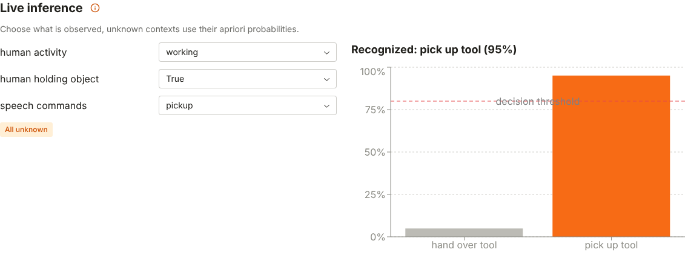
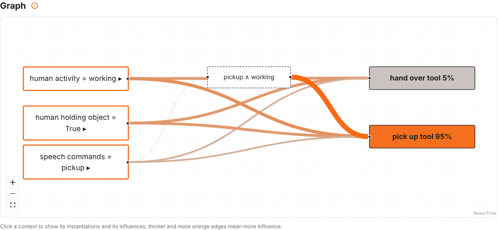

Web GUI
The web GUI is the primary GUI of CoBaIR. Install and start it with
pip install "cobair[web]"
cobair-web
cobair-web serves the GUI on http://localhost:8000 and opens it in your browser.
No Node.js is needed: the frontend is pre-built and part of the package.
| option | |
|---|---|
config.yml |
config file to open, Save writes back to it (created on save if it doesn't exist) |
--port 8000 |
port to listen on |
--host 127.0.0.1 |
host to listen on, use 0.0.0.0 to open the GUI to other machines |
--no-browser |
don't open the browser |

Configs
- New starts an empty config, Load YAML opens a file (or drop it on the button), Load example loads the example of the Tutorial.
- Download YAML saves the config as a file. Save is shown when
cobair-webwas started with a file and writes to that file. - Without a file, every change is kept as a draft in your browser and restored the next time you open the GUI, nothing gets lost when you close the tab.
- With a file, the badge unsaved changes shows that the config differs from the file, and the browser asks before you leave the page. Download YAML doesn't change that file.
- Undo / Redo (Ctrl+Z / Ctrl+Shift+Z or Ctrl+Y) step through your changes. While you type in a field, the shortcuts undo the text.
- Click the heading of a section or a context to fold it.
The config is only sent to the cobair-web process that serves the page, nothing is stored on a server.
Editing
The Tutorial explains every setting; the info icons in the GUI link there.
- Contexts: Add or the pencil icon open a dialog for the name, the instantiations and their apriori probabilities. Apriori probabilities can also be changed directly in the cards.
- Intentions: Add, rename (pencil icon) and delete (trash icon).
- Influences: choose a context, then choose a value for every instantiation and intention.
- Graph: click a context to unfold it and select it in the influence table, click an intention to highlight it.
- Combined influences: Add a value for a combination of instantiations, remove it with the trash icon.
- Decision threshold: a number between 0 and 1.
Problems of the config (e.g. apriori probabilities that don't sum up to 1) are listed at the top while you edit.
Live inference
The Live inference tab tests your config while you build it:
- Choose for every context what is observed, or unknown. Unknown contexts use their apriori probabilities.
- The chart shows the probability of every intention, the dashed line is the decision threshold. The intention above the threshold is highlighted and named above the chart, otherwise no intention is recognized.
- The graph shows the observed instantiations and colors the intentions by their probability.
- Switch back to the Editor, change values and come back: the evidence is kept and the result recomputed.


In your own code, the same inference is cobair.infer.Inference(config).infer(evidence), see the
API.
For developers
The web GUI is a Reflex app in cobair/web (Reflex is pinned to an exact version).
- Run it with hot reload:
cd cobair/web && reflex run - Build the frontend that is shipped in the package:
python -m cobair.web.build(Reflex downloads the JavaScript tools it needs). In a source checkout (pip install -e ".[web]")cobair-webdoes this by itself when the sources incobair/webchanged since the last build, e.g. after switching branches; otherwise the browser would keep reloading because the frontend doesn't match the backend state. - Tests:
pytest tests/web. The end-to-end tests startcobair-weband need the built frontend and Playwright (pip install --group e2e && playwright install chromium).